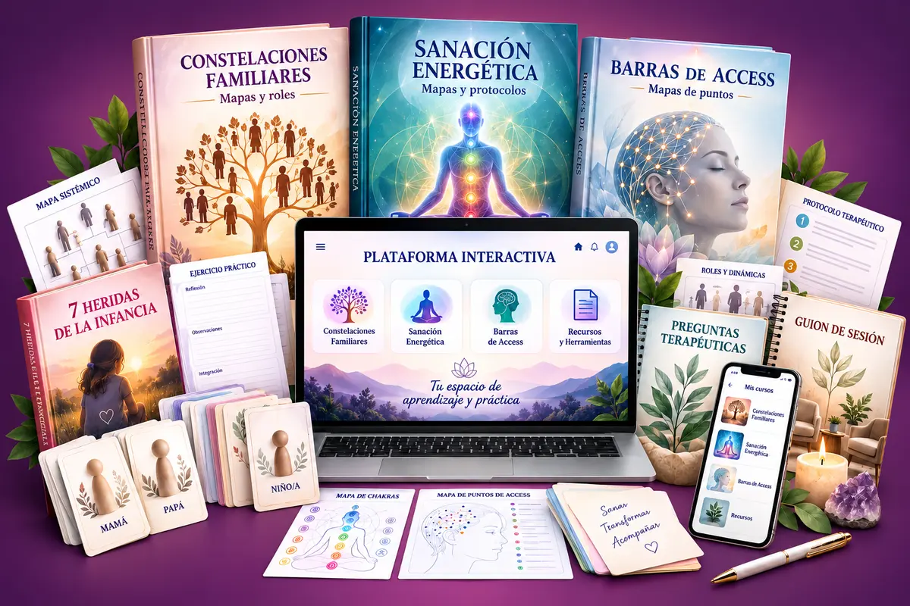
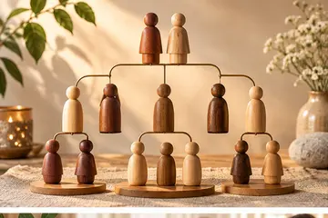
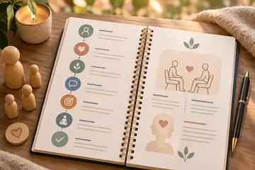
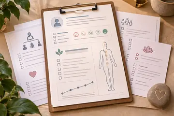
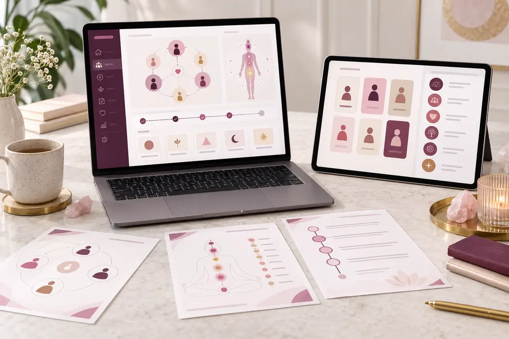

Cuando falta estructura
- Muchos documentos dispersos
- Dudas sobre qué preguntar
- Dificultad para encontrar el patrón
- Protocolos difíciles de consultar
Mapas, roles, preguntas y protocolos para identificar la raíz de un problema, reconocer los patrones que lo sostienen y acompañar procesos de orden, liberación e integración.
Úsalo por técnicas independientes o combínalas según las necesidades de cada sesión.

Más claridad en cada sesión
El kit organiza las herramientas para ayudarte a observar el problema desde lo sistémico, lo emocional y lo energético, sin obligarte a mezclar técnicas.
Una ruta fácil de aplicar
Explora antecedentes, vínculos, heridas y acontecimientos relacionados.
Reconoce roles, repeticiones, lealtades y respuestas que siguen activas.
Elige el mapa, las preguntas y la técnica más adecuada para el caso.
Acompaña el cierre y la integración con un protocolo organizado.
Tres caminos dentro de un solo kit
Cada bloque conserva su propia lógica para que puedas utilizarlo de forma independiente y conectarlo con los demás cuando el proceso lo requiera.
Investiga el sistema, las exclusiones, los órdenes, las lealtades y los lugares que ocupa cada integrante.
Observa emociones, vínculos, cargas, protecciones y componentes energéticos asociados al problema.
Consulta áreas, puntos, preguntas y secuencias prácticas de apoyo para organizar la sesión.
Contenido completo del kit
Cada recurso cumple una función dentro del proceso: investigar, reconocer el patrón, seleccionar la intervención, desarrollar la sesión y registrar la integración. Es un sistema conectado, libre de ser una acumulación de archivos sueltos.

Esquemas visuales para explorar padre, madre, pareja, hijos, hermanos, ancestros, exclusiones, pérdidas, secretos, pertenencia, dinero y éxito.
Para ubicar con claridad qué parte del sistema conviene observar.Guías del salvador, excluido, invisible, mediador, protector, hijo parentalizado, hijo perfecto y quien carga o repara al clan.
Para reconocer el lugar que la persona puede estar ocupando.Rutas paso a paso para vínculos con madre y padre, pareja, duelo, límites, repetición familiar, culpa, pertenencia, prosperidad y otros focos.
Con preparación, investigación, movimiento, frases y cierre.Representaciones de centros, campo personal, polaridades, vínculos, cordones, emociones, cargas, bloqueos, protecciones y límites energéticos.
Para ampliar la lectura más allá de lo verbal.Secuencias para investigar, confirmar, liberar, equilibrar e integrar emociones, memorias, vínculos, acuerdos, lealtades, escudos y mecanismos protectores.
Organizados para saber qué hacer antes, durante y después.Apoyo visual para consultar puntos, áreas relacionadas, preguntas de enfoque y secuencias prácticas asociadas a dinero, control, cuerpo, creatividad, relaciones y recibir.
Para encontrar rápidamente el área que deseas trabajar.Preguntas distribuidas por técnica, problemática y etapa de la sesión para precisar el objetivo, encontrar asociaciones y profundizar en la raíz.
Úsalas para abrir posibilidades cuando la conversación se estanca.Recursos verbales clasificados para reconocer, devolver, tomar, agradecer, cerrar, reorganizar e integrar sin depender de frases improvisadas.
Elige la formulación adecuada según el movimiento realizado.Rechazo, abandono, humillación, traición, injusticia, invisibilidad y desprotección, con manifestaciones, roles, raíces y mecanismos protectores.
Cada herida se conecta con rutas sistémicas y energéticas.
Una estructura adaptable desde la apertura hasta el seguimiento: objetivo, encuadre, exploración, hipótesis, elección del recurso, intervención, verificación y cierre.
Para sostener una sesión ordenada sin perder profundidad.
Formatos para registrar antecedentes, área de vida, intensidad, objetivo, recursos aplicados, hallazgos, cambios observados y próximos pasos.
Facilita la continuidad entre una sesión y la siguiente.Consulta el contenido por problema y relaciona posibles raíces, roles, heridas, mapas, preguntas y protocolos desde un mismo espacio visual.
Encuentra lo que necesitas con rapidez durante la preparación o la sesión.Mucho más que documentos
Además de los materiales descargables, tendrás una plataforma donde los esquemas principales están resumidos y conectados para encontrarlos con rapidez.

Una mirada a la historia emocional
Un marco práctico del kit para observar cómo ciertas experiencias tempranas pueden relacionarse con roles, respuestas protectoras y patrones actuales.
Cada herida puede consultarse desde su dimensión familiar, emocional y energética, con preguntas y protocolos de apoyo para la integración.
Bonos especiales incluidos
Una guía breve para preparar el espacio, centrar el objetivo y registrar el cierre.
Formato ordenado para documentar avances, hallazgos y próximos focos de trabajo.
Ejemplos para comprender cómo elegir una técnica o relacionar varias herramientas.
Creado para acompañantes de procesos
Aplicación práctica
Organiza el contenido según la forma en que trabajas y consulta únicamente el enfoque que resulte pertinente para cada proceso.
Consulta mapas familiares, roles, dinámicas, preguntas, movimientos y frases de integración dentro de una ruta ordenada.
Constelaciones FamiliaresMapas + roles + protocolosRelaciona emociones, vínculos, cargas, bloqueos y protecciones con secuencias para investigar, equilibrar e integrar.
Sanación EnergéticaLectura + intervención + cierreParte del motivo de consulta y conecta posibles raíces, heridas, preguntas y herramientas sin mezclar técnicas de forma automática.
Integración TerapéuticaClaridad + criterio + seguimientoAccede hoy a la colección completa
Compra protegida · Garantía de 7 días
Tienes 7 días desde la compra para revisar el contenido. Si dentro de ese plazo consideras que el kit deja de ajustarse a lo presentado en esta página, podrás solicitar el reembolso conforme al procedimiento de la plataforma de pago.
Preguntas frecuentes
Si alguna vez compraste material que parecía completo y terminó siendo superficial, aquí puedes entender qué hace diferente a este kit y cómo está organizado para llevarlo a la práctica.
El kit incluye materiales descargables, pero su valor está en cómo se conectan. Los mapas ayudan a ubicar el área; los roles y heridas amplían las hipótesis; las preguntas permiten investigar; los protocolos ordenan la intervención; las frases apoyan la integración; y las fichas conservan el seguimiento. Además, la plataforma interactiva resume estas conexiones para que la búsqueda deje de depender de abrir documentos al azar.
Porque profundiza en tres niveles de lectura —sistémico, emocional y energético— y organiza el trabajo por etapas. Cada problemática puede revisarse desde raíces posibles, roles, heridas, bloqueos, preguntas, mapas y protocolos. Esa arquitectura permite pasar de una idea general a una ruta de exploración mucho más específica.
Empiezas por el motivo de consulta y utilizas los mapas para identificar áreas relacionadas. Después contrastas roles, heridas o patrones con preguntas de investigación. Con esa información eliges el protocolo correspondiente y cierras con recursos de integración y seguimiento. El kit reduce la improvisación porque cada herramienta ocupa un lugar concreto dentro del proceso.
Están planteados como rutas prácticas: preparación, objetivo, aspectos a investigar, preguntas sugeridas, elementos a observar, posibles recursos, desarrollo, verificación, integración y cierre. Su función es ayudarte a convertir el conocimiento en una secuencia aplicable, manteniendo siempre tu criterio y el alcance de tu formación.
Incluye recursos para las etapas principales: anamnesis, definición del objetivo, investigación, lectura de raíces y patrones, selección de la herramienta, aplicación de protocolos, frases de integración, registro de hallazgos y seguimiento. Podrás adaptarlos a tu manera de trabajar y complementar aquello que exija una certificación o un contexto profesional específico.
Puedes utilizar Constelaciones Familiares, Sanación Energética o Barras de Access como bloques independientes. La integración es una posibilidad, jamás una obligación. Si ya manejas una técnica, comienzas por esa sección y utilizas las conexiones con las demás solo cuando tengan sentido para el caso.
Sí, porque presenta una estructura visual y progresiva que facilita saber qué consultar primero. A la vez, el nivel de detalle resulta útil para facilitadores con experiencia que desean ordenar recursos, ampliar preguntas y dejar de depender de la memoria. El kit apoya la práctica; nunca sustituye la formación o acreditación requerida para aplicar una técnica profesionalmente.
Puedes usar el kit como sistema de organización e integración. La diferencia está en relacionar, dentro de una misma ruta, el motivo de consulta con mapas, roles, heridas, preguntas, protocolos y seguimiento. Así, tus conocimientos previos dejan de estar aislados y pueden consultarse con mayor rapidez.
Sí. Las fichas visuales, los mapas y la plataforma están pensados para localizar información con rapidez. Puedes revisar el protocolo antes de comenzar, mantener abierto un mapa como apoyo y registrar al final lo trabajado. La aplicación responsable depende siempre de tu criterio, preparación y relación con el consultante.
Su función es integrar y resumir el sistema. En lugar de reemplazar los manuales, te ayuda a navegar por problemática y conectar posibles raíces, roles, heridas, preguntas y protocolos. Los documentos desarrollan el contenido; la plataforma facilita encontrarlo y relacionarlo.
Cualquier proceso humano depende de múltiples factores: historia personal, disposición, contexto, vínculo terapéutico y preparación de quien acompaña. El kit nunca promete un resultado automático. Lo que ofrece es una estructura más detallada para investigar, elegir herramientas con criterio, reducir omisiones y dar continuidad al proceso.
Es un producto 100% digital. Podrás acceder a los documentos descargables y a la integración interactiva desde los dispositivos compatibles indicados en la entrega. Podrás imprimir las fichas que desees utilizar en papel.
Después de la compra recibirás las instrucciones de acceso digital a través del canal configurado en la plataforma de pago.
Dispones de 7 días para revisar el contenido y comprobar si corresponde con lo presentado. Dentro de ese plazo podrás solicitar el reembolso mediante el procedimiento de la plataforma de pago.
Reúne en un mismo lugar las herramientas que pueden ayudarte a llegar a cada sesión con más claridad y estructura.
ACCEDER AL KIT POR USD 9 →